| |
Top 10 Flat Rides
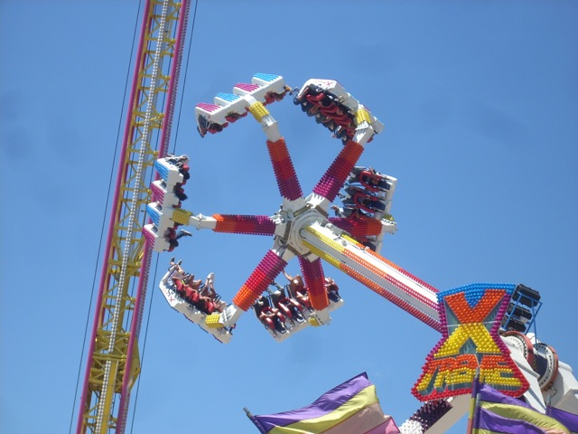
Welcome to an Incrediblecoasters Top 10 List. When we list stuff, we actually explain why. Flat Rides. They are everywhere nowadays. Amusement Parks usually have countless numbers of them. And for good reasons. They come in countless different varieties. Basically, if it's not a roller coaster, dark ride, or a water ride, it's probably a flat ride. So many of the typical amusment park staples are flat rides. Carousels are flat rides, Ferris Wheels are flat rides, Scramblers are flat rides, Pirate Ships are flat rides, and much much more. They can relax us, thrill us, or spin the living crap out of us and make normal people want to puke. Yeah, we've talked about our typical staple flat rides such as carousels, ferris wheels, bumper cars, scramblers, pirate ships, chairswings, tilt a whirls, and so forth. Those are all common and very fun flat rides. However, not all flat rides are created equal. There are some flat rides out there that will do things to your body you didn't think was possible, know is not good for your body, or just make you grow a bigass smile on your face. These are the elite flat rides. The ones that are above all the others. The ones that you are either very grateful parks were smart enough to clone and make popular, or the ones you get angry at parks for for not making them popular. These are the wildest, craziest, fastest, zaniest, puke inducing Top 10 Flat Rides. (This list excludes Drop Towers, because if it didn't, they'd take up half of the list.)
 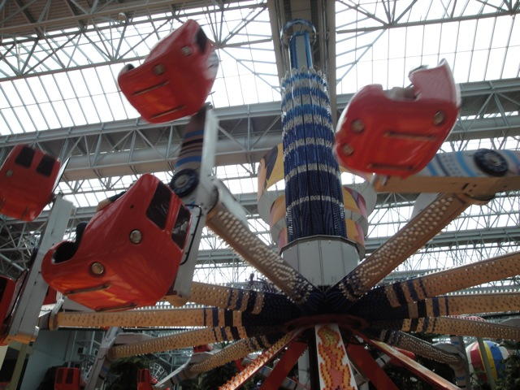 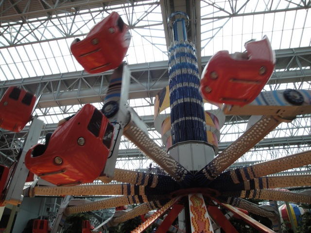
#10.

Decent Sized Starflyers @
Various Different Parks
It may seem weird to put the decent sized Starflyers on the list. I mean, why go for decent sized? Why not just go with the monsterous sized Starflyers? Well...mainly because I have never ridden a monsterous sized Starflyer (But I have climbed one before). But these rides are still a ton of fun, and are pretty big. These rides have a reputation for being freaking intense simply due to their height. And while this is not the biggest one, its still pretty damn big. Now I have absolutely no fear of heights, but it did feel cool being held up 225 ft. by just these dinky little chains. Yeah. The chains really make a big difference. It's why I so strongly prefer these Starflyers over the Windseekers. And of course, the wind was howling, causing for a rip roaring good time. And when you ride one of these with someone with a fear of heights. EPIC WIN!!!! =) It spins fairly well and the rising up and down the tower is pretty cool. But what I really liked was just the openness. The seats are really comfortable, and it honestly feels like there's no restraints. It just feels really cool. And when your view is Copenhagen, it makes the ride even better. Check it out now. =)
 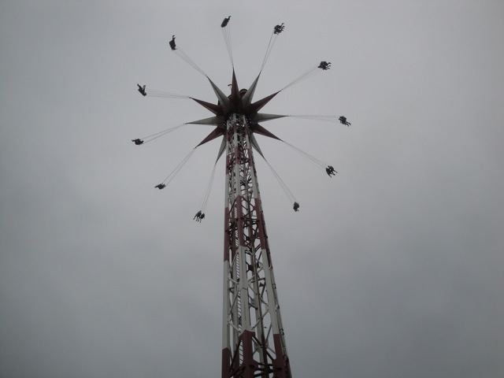 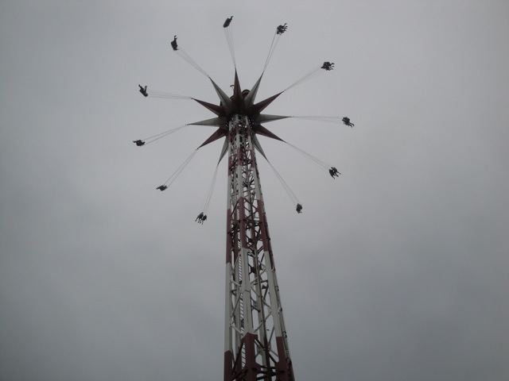
#9.
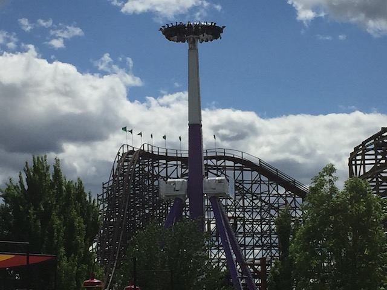
Spin Cycle @
Silverwood
Athol, Idaho, U.S.A
All right. You may have never heard of this type of flat ride. You probably don't even know what the hell kind of flat ride this is. Well, it's a Maxi Dance Party 360. These rides just appeared on the market a couple years ago, and there's currently only one other park that I know has one of these rides. So it's unknown if this ride will be popping up at a theme park near you soon, or if this ride is going to be a novelty limited to a small handful of theme parks. Either way, it's still an awesome ride. Now if you manage to look at Spin Cycle, you might start thinking that what you're looking at is just a giant firsbee. A giant frisbee that manages to go upsidedown and spin around. So it's more like Spin Out. OK, it doesn't actually swing like a frisbee. But god damn. We have to give the ride credit for giving you all sorts of intersting forces. Not only do you get all those upsidedown laterals from spinning upsidedown over a hundred feet in the air. But while the one flaw with the ride is the fact that it doesn't have any swing to it, it still feels kind of freaky to just be climbing up in the air and falling down to the ground while in the middle of flipping. That's always going to lead to a fun time. Spin Cycle. Hopefully cycling to a park near you in the future.
#8.
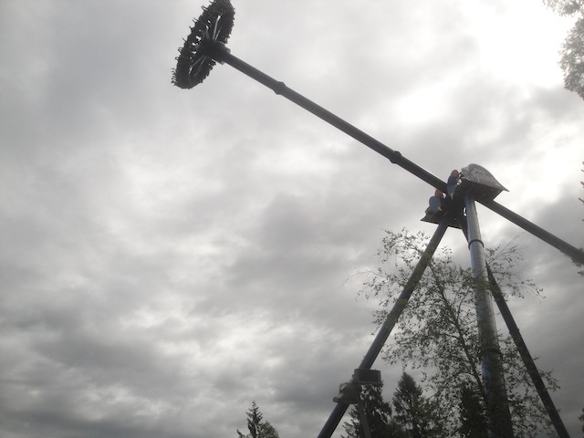
Giant Frisbees @
Various Different Parks
While nearly all frisbees are fun and all, it's the Giant Frisbees that take the win here. Originally, all the giant frisbees were made by Huss. But they sadly went out of business. Luckily, Zamperla is filling in the gap left behind, and judging by the fact that Six Flags parks are buying giant frisbees in bulk, I think its safe to say that these rides are going to be around for a while. They are just some of the craziest and most fun flat rides ever. While I do have to admit that the spin on these things isn't exactly the best spinning a frisbee can have, I will still say that these all spin better than some of the weaker frisbees. And then, we have the swing. Oh my god!!!! The swing!!!! The Swing on these things is just, and I mean just...INSANE!!!!!! You just fly up into the sky on these things, and when you head down back to the ground, you get more wind than you do on most coasters, they are just some of the best rides ever. And while they aren't the Starbucks of Flat Rides just yet, they're getting there thanks to the help of Six Flags and other parks. I'd to see your dog try and catch these frisbees.
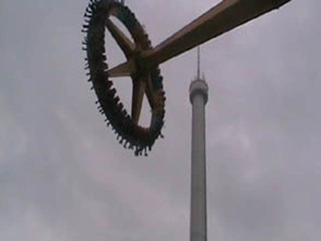
#7.

Speed @
American Fairs
Traveling as part of the American Fair System, this is one of the best rides that they've got. Now its not the best, but its one of the best. This ride may not be the most intense ride ever. It doesn't spin upsidedown or spin you until you just want to puke, but this ride is just full out balls to the walls fun. You are pretty much taken up like 100 ft in the air, facing a random parking lot. And then you just dive. You are literally just freefalling down towards the ground face first until you rock foreward or if you're really lucky, fling upsidedown. To this day, Speed is the only flat ride I know that can mimick X2's first drop. It is really that flipping insane. And on top of that, you also get to do some crazy flips high up in the air. The only complaint I have is that its got really sh*tty capacity. Even by flat ride standards, this thing has a pathetic capacity of only allowing 8 to ride at a time. So lines can get very long. But hey, its a great ride.
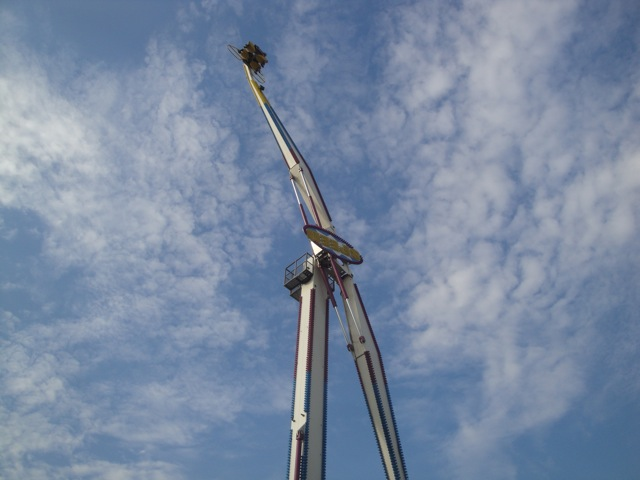
#6.

Brain Surge & Octotron @
Nickelodeon Universe & Belmont Park
Bloomington, Minnesota, U.S.A & San Diego, California, U.S.A
Known as one of the newest members of the flat ride family as a Chance Unicoaster, it may not be a coaster (or even close), but my god, is this ride just as good as a roller coaster. Claimed to be a modern version of the Looper @ Knoebels, this ride does indeed share many similarities between the two rides. However, the Chance Unicoaster takes all of Looper's faults and turns it into epicness. It's a self controlled flat ride, meaning that you control how crazy it gets. Trust me, if you ever ride one of these rides with Cody or I, you will be in for a wild ride. However, anyone can really ride this ride because even if you're lame and like your flat rides lame, you can still check it out in lameass mode and watch everyone else go crazy. And while this may not be the only self controlled flat ride out there, it's one of the best. Unlike the Looper, it's easy to control and flip, so you're both going crazy and not having your thighs hurt like crazy. So let's see, easy to flip, fast cycles, no pain whatsoever, oh, and did I mention the little bump. Yep, there's a little bump in the cycle, so when you flip over it, it makes the craziness even crazier. So whether you're having fun in the Mall of America or out in San Diego, be sure to check out this flat ride and experience the craziness.
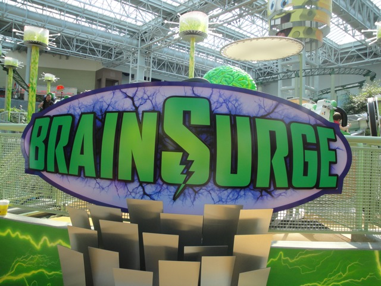
#5.

Knights Tournament & Power Builder @
Legoland California & Legoland Billund
Carlsbad, California, U.S.A & Billund, Jylland, Denmark
Now I'm betting that family parks like Legoland CA & Billund were just about the absolute last place you'd expect two Top 10 Flat Rides to ever pop up. But sure enough, they both have one and man are they great rides. Knights Tournament and Power Builder are robot arms, and man am I not happy that these things aren't becoming common flat rides. They are perfect for parks!!! They don't take up much space, they're fairly cheap, and they can be enjoyed by the entire family!!! They can be programmed to be mild attractions, or as you can clearly see, bat-sh*t crazy insane rides that'll just flip you and toss you around like a rag doll. From what I saw, Levels 1 & 2 are boring as hell. I saw tiny little preschool aged kids doing these levels. Level 3 is fun with some leaning and turns. Level 4 is pretty damn good, about on par with an average Top Spin, and then there's Level 5, which is absolutely insane. You just flip and rock and do all sorts of crazy things. If you're still not convinced that this ride is absolutely insane, just watch the video of us going crazy on Level 5. Now I personally prefer Power Builder, due to the fact that you get to choose all the specific flips you can do. Yeah, they have some limitations to prevent you from trying to custom create a Level 6. But it's a small difference, and the ride you create on Power Builder, it's pretty much gonna be extremely similar to the ride they serve you on Knights Tournament. Trust me, you will love these rides.
 
#4.

Vertigo @
Tivoli Gardens
Copenhagen, Sjælland, Denmark
This is one of those flat rides that...just look at it. This thing sticks out like a sore thumb. It's just a tiny little plane flipping around on a stick, which made a lot of people give it the name "Plane on a Stick". Hey! That name is taken! The real plane on a stick is over in Spain!. But yeah. A plane flipping around on a stick. It kind of looks like Speed at the American Fairs. Those boosters are a lot of fun. But what about this is different? What makes Vertigo so much different? What makes it go up several spots above Speed? Simple. Vertigo flips. Yes. I know that Speed flips too. I just talked about it up there. However, what you need to know, is that Vertigo flips on a different axis. So while you're diving to the ground and flipping, you're also side flipping at the same time. So you also get laterals while flipping. And throughout the entire time, it pulls A LOT of Gs. Seriously, you feel like a fighter pilot going trough all this. Vertigo. It's a shame about the bad capacity necause man is this ride intense.
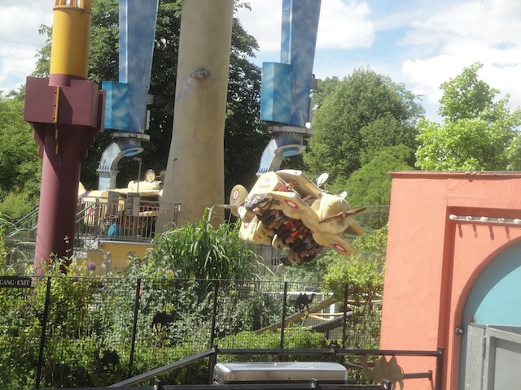
#3.

Tango @
American Fairs Fairs
Also located as part of the American Fair System, this is one of the absolute best rides that they've got. This ride is just absolutely insane in every single possible way. It does everything, flips you, twists you, and disorients you. This is the real f*cking deal. First off, its a stand up floorless ride. So yeah. You're flaying around like a rag doll standing up in the air with nothing to stand on. You've got no support at all, which makes all the crazy flipping all the more exciting. And yeah. You're high up in the air. While most of these flat rides do all their crazy flipping and spinning towards the ground, Tango decides to give you a nice view, flipping and rolling you all around at what feels like 100 ft in the air. It seriously lifts you high up in the air, which adds to the epicness of the flipping. And of course, the flipping is just absolutely insane. If you want your flat rides nice and mild, then this is not the ride for you. Tango. Go on and tango to the insanity of Tango!!! =)
 
#2.

The Zipper @
American Fairs
All right. I'm just gonna come out and say it. ZIPPER IS ONE OF THE BEST FLAT RIDES EVER!!!!! KING OF AMERICAN CARNIVALS!!! THE BIG ONE!!! THE ONE!!!! NO COMPETITION!!!!! CREAMS EVERYTHING ELSE!!!!! OK. Technically not true as there is one flat ride even better as you'll see. But as I have clearly stated, I love the Zipper. And that is because the Zipper is freaking insane. A flipping oval that cars flip on while the cars themselves flip. This is the sanest way to talk about the Zipper, though if you really try to think about it, your brain will hurt. Zipper is an unpredictable crazy bastard child. You don't decide what you will do. The Zipper chooses for you. You can go from a dozen flips in a row, to insane ejector air, to faceplanting the ground, or even all of the above at the same time. Yeah. That's a good ride on the Zipper. But even when the Zipper runs f*cking lame, it's still a better than average flat ride. And that's when it's bad. When it's running great, oh man, it's gonna be insane. Just climb in, and let it take you into flat ride nirvana. It's gonna flip. It's gonna eject. It's gonna rattle you up. And you'll love it. The Zipper is, has always been, and will probably always be, the king of American Carnivals. OK. So you know how much I love the Zipper and how much I orgasm about it. What the hell is topping it?
#1.

Kieppi @
Linnanmaki
Helsinki, Uusimaa, Finland
All right. You know how much I loved and gushed over the Zipper. For all those years, I called it the king of the carnival. The best. So what the hell is Kieppi doing up above it? Well, it beat the Zipper, so that means that this thing seriously has some balls. And yeah. This is easily without a doubt, one of the most intense and crazy flat rides ever. One of the big differences is...if you read the Zipper stuff, you'll notice me saying "Even when the Zipper is running lame", yeah. There's no need for me to ever be concerned about that on Kieppi. It's ALWAYS crazy. It's ALWAYS insane. And seriously. This thing just goes batsh*t insane. This thing is just spinning and flipping so fast, it just whips and flips, and you just have no idea what's going on. I'm not sure how many Gs this thing pulls, but it feels like a record. And sadly, these rides are extremely rare. I mean, there are only 3 of these things in the world. And to make things worse, Linnenmaki got rid of Kieppi (They have confirmed that they sold the ride off. So this ride still exists, I just don't know where it is now. But still a huge bummer). One is on the German Fair Circuit, and apparently one of these Huss Boosters is at some random park in China. I'm gonna go there. I don't care if it's one of those random sh*tty city parks where the only coaster is yet another crappy Jungle Mouse. I'll make it out there, because Kieppi is that good. It's better than most coasters out there. Seriously, they really need to bring a Huss Booster to some mainstream park. Any large park! If you find Kieppi, ride it. Whether it being at a German Fair, a random Chinese park, or wherever Kieppi wound up, if you see it, RIDE IT!!! One of the best and craziest flat rides ever.
 
So now I'm sure you know what you're thinking. "Wow. That was the list. That is so wrong." Well no. This is just the current list. I haven't been on every flat ride in the world, so until I do, this list is innacurate for a world wide description. There are still many many great flat rides out there for me to ride. And even when I do ride all of them, some flat rides will go bad, and new ones will be built, so no list will ever last forever. But still, this list does pay tribute to 10 fantastic flat rides that everyone should try if they ever have the chance. And if you could tell, most of the rides on this list had similar qualities which appealed to my taste in flat riddes. However, flat rides can come in many different styles and tastes for all sorts of people. There are still many other great flat rides out there not on this list. Ones that I have ridden and know about and simply didn't make the cut, and ones that I haven't ridden yet and are just waiting to get into the Incrediblecoasters System. Either way, go out and ride a flat ride today. They really are awesome.
|
{kind=link}